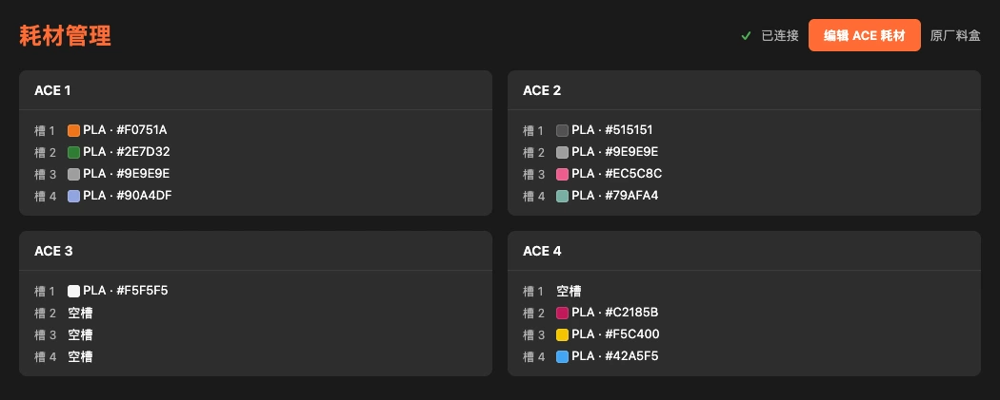

退到位，再送下一卷
保存已测的料路长度，进料用喷头传感器确认。可恢复的短退和送料异常，按同一路径有限重试。
按料仓查每卷料的颜色和材质，按喷头看正在用哪一路。打印前用同一份耗材资料做配色预检。
点选一个色块，查看示例料路。
料路示例
PLA · 陶土橙
示例按同槽号接到同一喷头。实际映射以料管接法和 MultiACE 设置为准。
保存已测的料路长度，进料用喷头传感器确认。可恢复的短退和送料异常，按同一路径有限重试。
打印前选择开启，由 ACE 在打印期间烘干。打印结束或取消时随任务关闭。
在 MultiACE 编辑颜色和材质，在 Fluidd 的耗材管理页查看槽位，也能在浏览器看机舱实时画面。
屏幕上选好的颜色会出现在网页上。真实空槽继续显示为空。


两者都使用 U1 的四个独立喷头。233 的扩展主要在外接料仓、换料流程和操作界面。
| 功能 | 原厂 U1 V2.1.2 | 233 固件 基于 PAXX |
|---|---|---|
| 物理供料 | 4 个独立喷头，单次任务可用 4 卷实料 | 4 个独立喷头，接入最多 4 台 ACE、16 个槽 |
| 多色工作流 | Snapmaker Orca 可用 Full Spectrum Beta 混出更多视觉色 | MultiACE 在外接槽位之间换实料，打印前可做颜色和料路预检 |
| 耗材资料 | 支持读取 Snapmaker 官方耗材的 RFID，也可手动设置 | 按 ACE 或喷头查看，屏幕设置的颜色和材质可同步到网页及配色预检 |
| 操作界面 | 原厂触屏、Snapmaker App 和 Snapmaker Orca | 233 暖色触屏、MultiACE 网页和 Fluidd 耗材管理 |
| ACE 烘干 | 使用原厂供料架，烘干由外部设备管理 | 打印前可选 55 °C 烘干，跟随任务启停 |
原厂功能参考 Snapmaker U1 FAQ 与 V2.1.2 更新记录。
2026 年 11 月 24 日
PAXX 整合版已完成开机检查。实机触屏、料仓和网页数据一致，网页补丁更新后复测了配色预检。